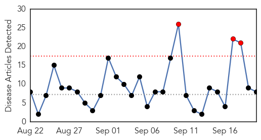
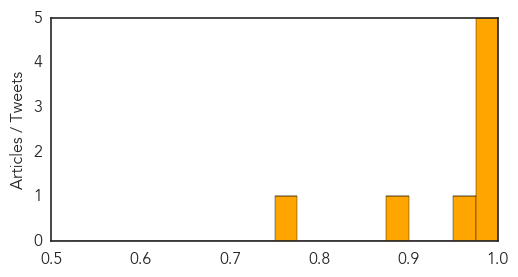
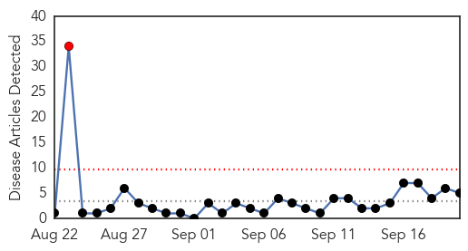
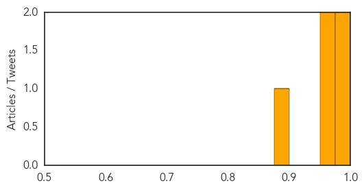

Influenza
30-Day Web Trend
3 alerts, 0 warnings

30-Day Twitter Trend
3 alerts, 0 warnings

Article Locations

Article Confidences
Top Articles:
- 0.995
- Flu season ahead: What you need to know to get protected
- 0.995
- Flu Season 2015 — Getting The Influenza Jab Could Save Your Life
- 0.994
- Doctors urging vaccinations for new flu season
- 0.989
- When should you get a flu vaccination?
- 0.983
- Beat the Flu Season Early -- Get a Flu Shot
- 0.975
- The Reedley Exponent > Ara > Health & Wellness
- 0.884
- Q Fever vaccine demand is only the "tip of the iceberg"
- 0.762
- Wild birds affected by bird flu first time in Ghana-
Top Tweets:
-
No tweets found for Sep 20, 2015
Cholera
30-Day Web Trend
1 alerts, 0 warnings

30-Day Twitter Trend
0 alerts, 0 warnings
Article Locations
Article Confidences
Top Articles:
- 1.000
- The Truth About Haiti’s Cholera Epidemic: An Interview with Dr. Renaud Piarroux
- 0.999
- Ministry of Health, WHO and partners step up Cholera outbreak response in Iraq [EN/AR] - Iraq
- 0.968
- KUNA : Health facilities alerted to dangers of cholera
- 0.961
- Fresh cholera outbreak plagues Baghdad
- 0.884
- Iraq tackles deadly cholera outbreak
Top Tweets:
-
No tweets found for Sep 20, 2015